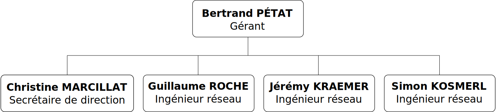

Gestion du projet : Redmine
- Dépôt de sources Subversion hébergé par l'école
- Tickets : gestion des bugs et demandes de fonctionnalités
- Conventions de codage sur le wiki
Secure Network Access Control for Kids
N. BOUGET, J. GUÉPIN, M. PINHÈDE, J. VAUBOURG
Encadré par G. ROCHE et J.-F. SCHEID
21 mars 2013
4 employés :
Notre solution : SNACK (Secure Network Access Control for Kids)
Réunions :
Outils utilisés :
Application web :
Authentification des utilisateurs du réseau de l'entreprise
Plusieurs méthodes :
Solution complète, simple et fonctionnelle
Découverte de nombreux outils
Utilisation en production rapidement par b.h. consulting
Questions ?
/
#